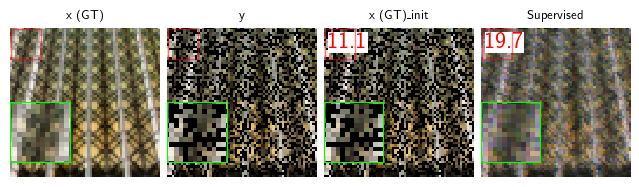

%cd ..
from pathlib import Path
import json
from itertools import zip_longest
from py_markdown_table.markdown_table import markdown_tableResults visualisation notebook
Use this notebook to visualise results generated from scripts/run_eval.py. Set the following variables:
RESULTS_FILE = Path('models/eval_test')Load results
with open(RESULTS_FILE.with_suffix(".json"), "r") as f:
results = json.load(f)# Utilities functions
def filt(lbl): return [results[id].get(lbl, "") for id in results.keys()]
def repr(m, dp=2, p='+'):#r'\textpm'
return rf"{str(round(m[0], dp)).lstrip('0')}{p} {str(round(m[1], dp)).lstrip('0')}" if (m is not None and m != "") else ""Clean results
titles, metrics, metrics_init = filt('title'), filt('metrics'), filt('metrics_init')
titles = ["No learning"] + titles
metrics = [metrics_init[0]] + metrics #0 here arbitrary as all the sametable = [{
"Method": title,
"metric1": repr(metric[0], 2),
"metric2": repr(metric[1], 3),
} for title, metric in zip_longest(titles, metrics)]Print markdown table
print(markdown_table(table).set_params(row_sep="markdown").get_markdown())```| Method | metric1 | metric2 |
|-----------|----------|----------|
|No learning|11.1+ 2.31| .227+ .09|
| Supervised|19.7+ 2.55|.543+ .114|```Print latex table
for m in table:
print(rf'{m["Method"]} & {m["metric1"]} & {m["metric2"]} \\')No learning & 11.1+ 2.31 & .227+ .09 \\
Supervised & 19.7+ 2.55 & .543+ .114 \\Load reconstructions
import numpy as np
import torch
import deepinv as dinv
data = np.load(RESULTS_FILE.with_suffix(".npz"))
def get_data(k, rows=[]):
vis = data[k]
res = data[k + "_result"]
vis = torch.tensor(vis)#.clamp(vis, -5, 5)[..., 128:512-128, :] #optional cropping and clamping
k = k.replace("x", "x (GT)") #optional prettify titles
return k, vis[rows], res
def _plot_images(*labels, rows=[0], **kwargs):
titles, xs, results = list(zip(*[get_data(k, rows=rows) for k in labels]))
return dinv.utils.plot_inset(
xs,
titles=titles,
figsize=(2*len(labels), 2*len(xs[0])),
show=False,
labels=results,
**kwargs
)_plot_images("x", "y", "x_init", "Supervised", save_fn=f"results/{RESULTS_FILE.name}.png", dpi=600)